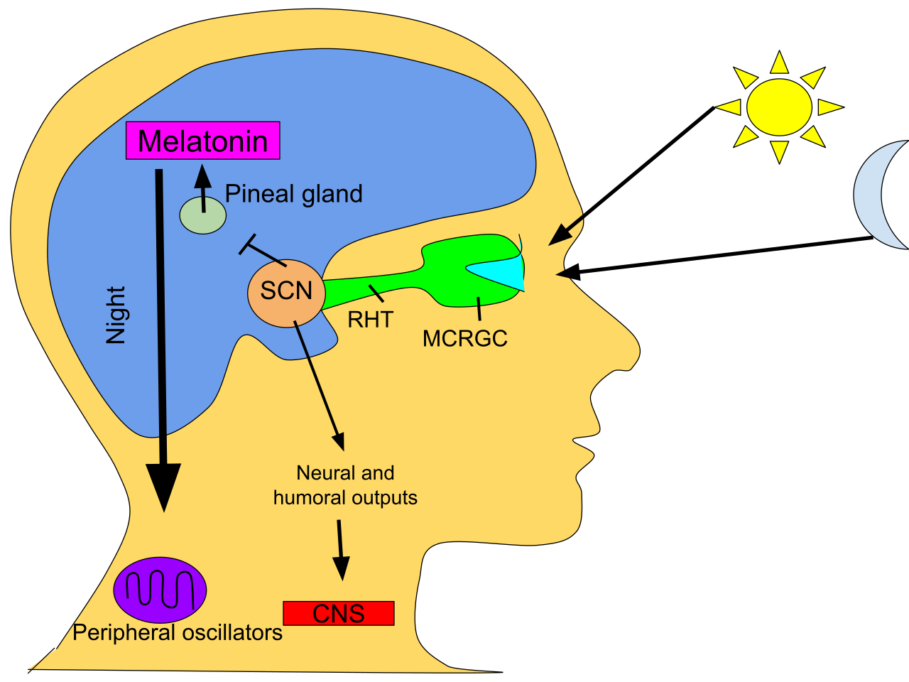
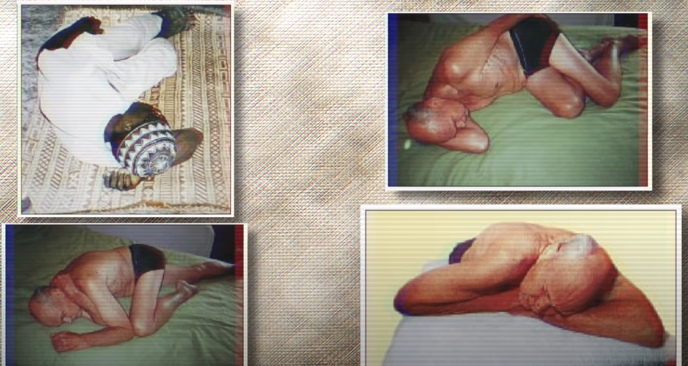

![Logo](data:image/svg+xml;base64,PD94bWwgdmVyc2lvbj0iMS4wIiBlbmNvZGluZz0idXRmLTgiPz4KPCEtLSBHZW5lcmF0b3I6IEFk%0D%0Ab2JlIElsbHVzdHJhdG9yIDIzLjAuMSwgU1ZHIEV4cG9ydCBQbHVnLUluIC4gU1ZHIFZlcnNpb246%0D%0AIDYuMDAgQnVpbGQgMCkgIC0tPgo8c3ZnIHZlcnNpb249IjEuMSIgaWQ9IkxheWVyXzEiIHhtbG5z%0D%0APSJodHRwOi8vd3d3LnczLm9yZy8yMDAwL3N2ZyIgeG1sbnM6eGxpbms9Imh0dHA6Ly93d3cudzMu%0D%0Ab3JnLzE5OTkveGxpbmsiIHg9IjBweCIgeT0iMHB4IgoJIHZpZXdCb3g9IjAgMCA4MDAgODAwIiBz%0D%0AdHlsZT0iZW5hYmxlLWJhY2tncm91bmQ6bmV3IDAgMCA4MDAgODAwOyIgeG1sOnNwYWNlPSJwcmVz%0D%0AZXJ2ZSI+CjxzdHlsZSB0eXBlPSJ0ZXh0L2NzcyI+Cgkuc3Qwe2ZpbGw6IzhENzFFMjt9Cgkuc3Qx%0D%0Ae2ZpbGw6Izc2NTJDRTt9Cgkuc3Qye2ZpbGw6Izc4NTFBOTt9Cjwvc3R5bGU+CjxnPgoJPGNpcmNs%0D%0AZSBjeD0iMjUwOCIgY3k9IjQwMCIgcj0iMzg4Ii8+Cgk8Zz4KCQk8cGF0aCBjbGFzcz0ic3QwIiBk%0D%0APSJNMjcwNy4zNSwyMzkuMDVMMjcwNy4zNSwyMzkuMDVjMCwwLDAuMDEsMC4wMSwwLjAxLDAuMDFM%0D%0AMjcwNy4zNSwyMzkuMDV6Ii8+CgkJPHBhdGggY2xhc3M9InN0MCIgZD0iTTI3NDkuNzEsMjkxLjAz%0D%0AYy0xLjgyLTguNTMtNi44NC0xNi45Mi0xNS4wOC0yNS4xOGMtNS4zMS01LjMzLTEwLjU5LTguNDct%0D%0AMTUuNzUtOS40NQoJCQljLTUuMjUtMC45OC05LjktMC4yOC0xNC4xMSwyLjIxYy00LjE4LDIuNDUt%0D%0AOS4zNSw2LjcyLTE1LjQ5LDEyLjg0bC01Ny4yMiw1Ny4wOGMtNy4zMi0xMS4zNy05LjgzLTIyLjkz%0D%0ALTcuNS0zNC42MwoJCQljMi4zMy0xMS43Myw3Ljk3LTIyLjA3LDE2LjkxLTMwLjk5YzE2Ljk2LTE2%0D%0ALjkyLDMzLjM4LTIxLjM4LDQ5LjMtMTMuNGwxNi41Ny0xMC40NWMtOS40NC05LjkzLTIyLjE0LTE0%0D%0ALjQzLTM4LjExLTEzLjQ1CgkJCWMtMTUuOTQsMC45NS0zMC43Myw4LjI3LTQ0LjQ0LDIxLjk1Yy0x%0D%0ANC43OSwxNC43Ni0yMi4yNCwzMS41MS0yMi4zMiw1MC4zMmMtMC4wOCwxOC43Miw1LjI1LDMzLjQ5%0D%0ALDE1Ljk3LDQ0LjI0bC0yMS4yNiwyMS4yMgoJCQljLTAuOTUtMS4wMi0xLjkyLTIuMDMtMi45My0z%0D%0ALjAyYy0xNy40LTE3LjE5LTQyLjU2LTI2LjczLTc1LjMzLTI4Ljh2LTI4LjM2aDQzLjkzdi0yMi42%0D%0AaC0xMTUuOHYyMi42aDQwLjg0djI4LjM2CgkJCWMtMjIuNDcsMS4xLTQxLjAyLDUuNjktNTUuNTgs%0D%0AMTMuNzZjLTYuODIsMy44LTEyLjksOC4yNC0xOC4yNiwxMy4zMWwtMTYuNS0xNi40NmMxMC43Mi0x%0D%0AMC43NSwxNi4wNS0yNS41MiwxNS45Ny00NC4yNAoJCQljLTAuMDgtMTguOC03LjUzLTM1LjU2LTIy%0D%0ALjMyLTUwLjMyYy0xMy43MS0xMy42OC0yOC40OS0yMC45OS00NC40NC0yMS45NWMtMTUuOTYtMC45%0D%0AOC0yOC42NiwzLjUyLTM4LjExLDEzLjQ1bDE2LjU3LDEwLjQ1CgkJCWMxNS45Mi03Ljk4LDMyLjM0%0D%0ALTMuNTIsNDkuMywxMy40YzguOTQsOC45MiwxNC41OCwxOS4yNiwxNi45MSwzMC45OWMyLjMzLDEx%0D%0ALjctMC4xOCwyMy4yNi03LjUsMzQuNjNsLTU3LjIyLTU3LjA4CgkJCWMtNi4xMy02LjEyLTExLjMt%0D%0AMTAuMzktMTUuNDktMTIuODRjLTQuMjEtMi40OC04Ljg2LTMuMTgtMTQuMTEtMi4yMWMtNS4xNyww%0D%0ALjk4LTEwLjQ0LDQuMTItMTUuNzUsOS40NQoJCQljLTguMjQsOC4yNi0xMy4yNiwxNi42NS0xNS4w%0D%0AOCwyNS4xOGMtMS44LDguNTYtMC45LDE4LjE5LDIuNzYsMjguOTdjMy42OCwxMC44Myw5LjYzLDIw%0D%0ALjM1LDE3Ljk2LDI4LjY2CgkJCWM2Ljk1LDYuOTQsMTUuMzMsMTIuNDcsMjUuMTMsMTYuNTVjOS43%0D%0AOCw0LjEsMjAuNzgsNS45MiwzMi45OCw1LjM4YzEyLjE4LTAuNTYsMjQuNTMtNC44OCwzNy4wMi0x%0D%0AMy4wM2wxOC4wNywxOC4wMgoJCQljLTAuNiwwLjk3LTEuMTksMS45Ni0xLjc2LDIuOTdjLTguMDIs%0D%0AMTQuMDctMTEuOTksMjkuNzgtMTEuOTksNDcuMTJjMCwyNi41LDkuMiw0OC4yOCwyNy42NSw2NS4y%0D%0AOQoJCQljMTguNDIsMTYuOTYsNDMuMDIsMjYuMDYsNzMuOCwyNy4yMXYzMy43NmgtNDAuODR2MjIu%0D%0ANmgxMTUuOHYtMjIuNmgtNDMuOTN2LTMzLjc2YzI5Ljk1LTEuMDIsNTQuMzItOS44MSw3My4yMS0y%0D%0ANi4zNAoJCQljMTguODMtMTYuNTMsMjguMjYtMzkuMDgsMjguMjYtNjcuNmMwLTE1Ljk2LTMuNDMt%0D%0AMzAuMy0xMC4yNy00Mi45OWwyMy43NC0yMy42OWMxMi40OSw4LjE1LDI0Ljg0LDEyLjQ3LDM3LjAy%0D%0ALDEzLjAzCgkJCWMxMi4xOSwwLjU0LDIzLjE5LTEuMjgsMzIuOTgtNS4zOGM5LjgtNC4wOSwxOC4x%0D%0AOC05LjYyLDI1LjEzLTE2LjU1YzguMzMtOC4zMSwxNC4yOC0xNy44MywxNy45Ni0yOC42NgoJCQlD%0D%0AMjc1MC42MSwzMDkuMjIsMjc1MS41MSwyOTkuNTksMjc0OS43MSwyOTEuMDN6IE0yMzM2LjcxLDM0%0D%0AOS44NmMtMTIuMTMtMS42NC0yMy43Mi04LjAxLTM0Ljg4LTE5LjE1CgkJCWMtMTAuMzYtMTAuMzMt%0D%0AMTUuOTktMTkuNzktMTYuOTUtMjguMzFjLTAuOTMtOC41NSwwLjc1LTE0Ljk2LDUuMDMtMTkuMjVj%0D%0AMy4wNC0zLjA1LDYuMzYtNC4yMyw5Ljg3LTMuNTVzOC44NCw0LjYzLDE2LjAxLDExLjc5CgkJCWw1%0D%0AMi4wNCw1MS45MkMyMzU5LjE4LDM0OS4zLDIzNDguODEsMzUxLjQ3LDIzMzYuNzEsMzQ5Ljg2eiBN%0D%0AMjQzOC41MSw0NzQuNjFjLTEzLjItMTEuMjUtMTkuODEtMjcuNTUtMTkuODEtNDkuMQoJCQljMC0y%0D%0AMS4zNSw2LjA1LTM3LjY0LDE4LjEyLTQ5LjA0YzEyLjEyLTExLjQsMjkuMTMtMTcuNDgsNTEuMDct%0D%0AMTguMDd2MC4wM3YxMzMuNDNDMjQ2OC4xOSw0OTEuNTIsMjQ1MS43MSw0ODUuNzgsMjQzOC41MSw0%0D%0ANzQuNjF6CgkJCSBNMjU3MC4yLDQ3My40NmMtMTIuMzMsMTEuNjEtMjkuNDcsMTcuNzEtNTEuMjcs%0D%0AMTguMzd2LTEzMy40YzIyLjkxLDAsNDAuMjYsNi4xOCw1Mi4wOSwxOC42YzExLjg0LDEyLjM4LDE3%0D%0ALjczLDI4LjQyLDE3LjczLDQ3Ljk5CgkJCUMyNTg4Ljc1LDQ0NS42OCwyNTgyLjU3LDQ2MS44NSwy%0D%0ANTcwLjIsNDczLjQ2eiBNMjczMS4xMiwzMDIuMzljLTAuOTUsOC41My02LjU5LDE3Ljk4LTE2Ljk1%0D%0ALDI4LjMxCgkJCWMtMTEuMTcsMTEuMTQtMjIuNzYsMTcuNTEtMzQuODgsMTkuMTVjLTEyLjEsMS42%0D%0AMS0yMi40Ny0wLjU1LTMxLjEzLTYuNTZsNTIuMDQtNTEuOTJjNy4xNy03LjE2LDEyLjUtMTEuMTEs%0D%0AMTYuMDEtMTEuNzkKCQkJczYuODMsMC41MSw5Ljg3LDMuNTVDMjczMC4zNywyODcuNDQsMjczMi4w%0D%0ANCwyOTMuODQsMjczMS4xMiwzMDIuMzl6Ii8+CgkJPHBhdGggY2xhc3M9InN0MCIgZD0iTTIzMDgu%0D%0ANjQsMjM5LjA3YzAsMCwwLjAxLTAuMDEsMC4wMS0wLjAxbDAsMEwyMzA4LjY0LDIzOS4wN3oiLz4K%0D%0ACTwvZz4KPC9nPgo8Zz4KCTxjaXJjbGUgY3g9IjE0NTgiIGN5PSI0MDAiIHI9IjM4OCIvPgoJPGc+%0D%0ACgkJPHBhdGggY2xhc3M9InN0MSIgZD0iTTE2NTcuMzUsMjM5LjA1TDE2NTcuMzUsMjM5LjA1YzAs%0D%0AMCwwLjAxLDAuMDEsMC4wMSwwLjAxTDE2NTcuMzUsMjM5LjA1eiIvPgoJCTxwYXRoIGNsYXNzPSJz%0D%0AdDEiIGQ9Ik0xNjk5LjcxLDI5MS4wM2MtMS44Mi04LjUzLTYuODQtMTYuOTItMTUuMDgtMjUuMThj%0D%0ALTUuMzEtNS4zMy0xMC41OS04LjQ3LTE1Ljc1LTkuNDUKCQkJYy01LjI1LTAuOTgtOS45LTAuMjgt%0D%0AMTQuMTEsMi4yMWMtNC4xOCwyLjQ1LTkuMzUsNi43Mi0xNS40OSwxMi44NGwtNTcuMjIsNTcuMDhj%0D%0ALTcuMzItMTEuMzctOS44My0yMi45My03LjUtMzQuNjMKCQkJYzIuMzMtMTEuNzMsNy45Ny0yMi4w%0D%0ANywxNi45MS0zMC45OWMxNi45Ni0xNi45MiwzMy4zOC0yMS4zOCw0OS4zLTEzLjRsMTYuNTctMTAu%0D%0ANDVjLTkuNDQtOS45My0yMi4xNC0xNC40My0zOC4xMS0xMy40NQoJCQljLTE1Ljk0LDAuOTUtMzAu%0D%0ANzMsOC4yNy00NC40NCwyMS45NWMtMTQuNzksMTQuNzYtMjIuMjQsMzEuNTEtMjIuMzIsNTAuMzJj%0D%0ALTAuMDgsMTguNzIsNS4yNSwzMy40OSwxNS45Nyw0NC4yNGwtMjEuMjcsMjEuMjIKCQkJYy0wLjk1%0D%0ALTEuMDItMS45Mi0yLjAzLTIuOTMtMy4wMmMtMTcuNC0xNy4xOS00Mi41Ni0yNi43My03NS4zNC0y%0D%0AOC44di0yOC4zNmg0My45M3YtMjIuNmgtMTE1Ljh2MjIuNmg0MC44NHYyOC4zNgoJCQljLTIyLjQ3%0D%0ALDEuMS00MS4wMiw1LjY5LTU1LjU4LDEzLjc2Yy02LjgyLDMuOC0xMi45LDguMjQtMTguMjYsMTMu%0D%0AMzFsLTE2LjUtMTYuNDZjMTAuNzItMTAuNzUsMTYuMDUtMjUuNTIsMTUuOTctNDQuMjQKCQkJYy0w%0D%0ALjA4LTE4LjgtNy41My0zNS41Ni0yMi4zMi01MC4zMmMtMTMuNzEtMTMuNjgtMjguNDktMjAuOTkt%0D%0ANDQuNDQtMjEuOTVjLTE1Ljk2LTAuOTgtMjguNjYsMy41Mi0zOC4xMSwxMy40NWwxNi41NywxMC40%0D%0ANQoJCQljMTUuOTItNy45OCwzMi4zNC0zLjUyLDQ5LjMsMTMuNGM4Ljk0LDguOTIsMTQuNTgsMTku%0D%0AMjYsMTYuOTEsMzAuOTljMi4zMywxMS43LTAuMTgsMjMuMjYtNy41LDM0LjYzbC01Ny4yMi01Ny4w%0D%0AOAoJCQljLTYuMTMtNi4xMi0xMS4zLTEwLjM5LTE1LjQ5LTEyLjg0Yy00LjIxLTIuNDgtOC44Ni0z%0D%0ALjE4LTE0LjExLTIuMjFjLTUuMTcsMC45OC0xMC40NCw0LjEyLTE1Ljc1LDkuNDUKCQkJYy04LjI0%0D%0ALDguMjYtMTMuMjYsMTYuNjUtMTUuMDgsMjUuMThjLTEuOCw4LjU2LTAuOSwxOC4xOSwyLjc2LDI4%0D%0ALjk3YzMuNjgsMTAuODMsOS42MywyMC4zNSwxNy45NiwyOC42NgoJCQljNi45NSw2Ljk0LDE1LjMz%0D%0ALDEyLjQ3LDI1LjEzLDE2LjU1YzkuNzgsNC4xLDIwLjc4LDUuOTIsMzIuOTgsNS4zOGMxMi4xOC0w%0D%0ALjU2LDI0LjUzLTQuODgsMzcuMDItMTMuMDNsMTguMDcsMTguMDIKCQkJYy0wLjYsMC45Ny0xLjE5%0D%0ALDEuOTYtMS43NiwyLjk3Yy04LjAyLDE0LjA3LTExLjk5LDI5Ljc4LTExLjk5LDQ3LjEyYzAsMjYu%0D%0ANSw5LjIsNDguMjgsMjcuNjUsNjUuMjkKCQkJYzE4LjQyLDE2Ljk2LDQzLjAyLDI2LjA2LDczLjgs%0D%0AMjcuMjF2MzMuNzZoLTQwLjg0djIyLjZoMTE1Ljh2LTIyLjZoLTQzLjkzdi0zMy43NmMyOS45NS0x%0D%0ALjAyLDU0LjMyLTkuODEsNzMuMjEtMjYuMzQKCQkJYzE4LjgzLTE2LjUzLDI4LjI2LTM5LjA4LDI4%0D%0ALjI2LTY3LjZjMC0xNS45Ni0zLjQzLTMwLjMtMTAuMjctNDIuOTlsMjMuNzQtMjMuNjljMTIuNDks%0D%0AOC4xNSwyNC44NCwxMi40NywzNy4wMiwxMy4wMwoJCQljMTIuMTksMC41NCwyMy4xOS0xLjI4LDMy%0D%0ALjk4LTUuMzhjOS44LTQuMDksMTguMTgtOS42MiwyNS4xMy0xNi41NWM4LjMzLTguMzEsMTQuMjgt%0D%0AMTcuODMsMTcuOTYtMjguNjYKCQkJQzE3MDAuNjEsMzA5LjIyLDE3MDEuNTEsMjk5LjU5LDE2OTku%0D%0ANzEsMjkxLjAzeiBNMTI4Ni43MSwzNDkuODZjLTEyLjEzLTEuNjQtMjMuNzItOC4wMS0zNC44OC0x%0D%0AOS4xNQoJCQljLTEwLjM2LTEwLjMzLTE1Ljk5LTE5Ljc5LTE2Ljk1LTI4LjMxYy0wLjkzLTguNTUs%0D%0AMC43NS0xNC45Niw1LjAzLTE5LjI1YzMuMDQtMy4wNSw2LjM2LTQuMjMsOS44Ny0zLjU1czguODQs%0D%0ANC42MywxNi4wMSwxMS43OQoJCQlsNTIuMDQsNTEuOTJDMTMwOS4xOCwzNDkuMywxMjk4LjgxLDM1%0D%0AMS40NywxMjg2LjcxLDM0OS44NnogTTEzODguNTEsNDc0LjYxYy0xMy4yLTExLjI1LTE5LjgxLTI3%0D%0ALjU1LTE5LjgxLTQ5LjEKCQkJYzAtMjEuMzUsNi4wNS0zNy42NCwxOC4xMi00OS4wNGMxMi4xMi0x%0D%0AMS40LDI5LjEzLTE3LjQ4LDUxLjA3LTE4LjA3djAuMDN2MTMzLjQzQzE0MTguMTksNDkxLjUyLDE0%0D%0AMDEuNzEsNDg1Ljc4LDEzODguNTEsNDc0LjYxegoJCQkgTTE1MjAuMiw0NzMuNDZjLTEyLjMzLDEx%0D%0ALjYxLTI5LjQ3LDE3LjcxLTUxLjI3LDE4LjM3di0xMzMuNGMyMi45MSwwLDQwLjI2LDYuMTgsNTIu%0D%0AMDksMTguNmMxMS44NCwxMi4zOCwxNy43MywyOC40MiwxNy43Myw0Ny45OQoJCQlDMTUzOC43NSw0%0D%0ANDUuNjgsMTUzMi41Nyw0NjEuODUsMTUyMC4yLDQ3My40NnogTTE2ODEuMTIsMzAyLjM5Yy0wLjk1%0D%0ALDguNTMtNi41OSwxNy45OC0xNi45NSwyOC4zMQoJCQljLTExLjE3LDExLjE0LTIyLjc2LDE3LjUx%0D%0ALTM0Ljg4LDE5LjE1Yy0xMi4xLDEuNjEtMjIuNDctMC41NS0zMS4xMy02LjU2bDUyLjA0LTUxLjky%0D%0AYzcuMTctNy4xNiwxMi41LTExLjExLDE2LjAxLTExLjc5CgkJCXM2LjgzLDAuNTEsOS44NywzLjU1%0D%0AQzE2ODAuMzcsMjg3LjQ0LDE2ODIuMDQsMjkzLjg0LDE2ODEuMTIsMzAyLjM5eiIvPgoJCTxwYXRo%0D%0AIGNsYXNzPSJzdDEiIGQ9Ik0xMjU4LjY0LDIzOS4wN2MwLDAsMC4wMS0wLjAxLDAuMDEtMC4wMWww%0D%0ALDBMMTI1OC42NCwyMzkuMDd6Ii8+Cgk8L2c+CjwvZz4KPGc+Cgk8Y2lyY2xlIGN4PSI0MDAiIGN5%0D%0APSI0MDAiIHI9IjM4OCIvPgoJPGc+CgkJPHBhdGggY2xhc3M9InN0MiIgZD0iTTU5OS4zNSwyMzku%0D%0AMDVMNTk5LjM1LDIzOS4wNWMwLDAsMC4wMSwwLjAxLDAuMDEsMC4wMUw1OTkuMzUsMjM5LjA1eiIv%0D%0APgoJCTxwYXRoIGNsYXNzPSJzdDIiIGQ9Ik02NDEuNzEsMjkxLjAzYy0xLjgyLTguNTMtNi44NC0x%0D%0ANi45Mi0xNS4wOC0yNS4xOGMtNS4zMS01LjMzLTEwLjU5LTguNDctMTUuNzUtOS40NQoJCQljLTUu%0D%0AMjUtMC45OC05LjktMC4yOC0xNC4xMSwyLjIxYy00LjE4LDIuNDUtOS4zNSw2LjcyLTE1LjQ5LDEy%0D%0ALjg0bC01Ny4yMiw1Ny4wOGMtNy4zMi0xMS4zNy05LjgzLTIyLjkzLTcuNS0zNC42MwoJCQljMi4z%0D%0AMy0xMS43Myw3Ljk3LTIyLjA3LDE2LjkxLTMwLjk5YzE2Ljk2LTE2LjkyLDMzLjM4LTIxLjM4LDQ5%0D%0ALjMtMTMuNGwxNi41Ny0xMC40NWMtOS40NC05LjkzLTIyLjE0LTE0LjQzLTM4LjExLTEzLjQ1CgkJ%0D%0ACWMtMTUuOTQsMC45NS0zMC43Myw4LjI3LTQ0LjQ0LDIxLjk1Yy0xNC43OSwxNC43Ni0yMi4yNCwz%0D%0AMS41MS0yMi4zMiw1MC4zMmMtMC4wOCwxOC43Miw1LjI1LDMzLjQ5LDE1Ljk3LDQ0LjI0bC0yMS4y%0D%0ANiwyMS4yMgoJCQljLTAuOTUtMS4wMi0xLjkyLTIuMDMtMi45My0zLjAyYy0xNy40LTE3LjE5LTQy%0D%0ALjU2LTI2LjczLTc1LjM0LTI4Ljh2LTI4LjM2aDQzLjkzdi0yMi42aC0xMTUuOHYyMi42aDQwLjg0%0D%0AdjI4LjM2CgkJCWMtMjIuNDcsMS4xLTQxLjAyLDUuNjktNTUuNTgsMTMuNzZjLTYuODIsMy44LTEy%0D%0ALjksOC4yNC0xOC4yNiwxMy4zMWwtMTYuNS0xNi40NmMxMC43Mi0xMC43NSwxNi4wNS0yNS41Miwx%0D%0ANS45Ny00NC4yNAoJCQljLTAuMDgtMTguOC03LjUzLTM1LjU2LTIyLjMyLTUwLjMyYy0xMy43MS0x%0D%0AMy42OC0yOC40OS0yMC45OS00NC40NC0yMS45NWMtMTUuOTYtMC45OC0yOC42NiwzLjUyLTM4LjEx%0D%0ALDEzLjQ1bDE2LjU3LDEwLjQ1CgkJCWMxNS45Mi03Ljk4LDMyLjM0LTMuNTIsNDkuMywxMy40Yzgu%0D%0AOTQsOC45MiwxNC41OCwxOS4yNiwxNi45MSwzMC45OWMyLjMzLDExLjctMC4xOCwyMy4yNi03LjUs%0D%0AMzQuNjNsLTU3LjIyLTU3LjA4CgkJCWMtNi4xMy02LjEyLTExLjMtMTAuMzktMTUuNDktMTIuODRj%0D%0ALTQuMjEtMi40OC04Ljg2LTMuMTgtMTQuMTEtMi4yMWMtNS4xNywwLjk4LTEwLjQ0LDQuMTItMTUu%0D%0ANzUsOS40NQoJCQljLTguMjQsOC4yNi0xMy4yNiwxNi42NS0xNS4wOCwyNS4xOGMtMS44LDguNTYt%0D%0AMC45LDE4LjE5LDIuNzYsMjguOTdjMy42OCwxMC44Myw5LjYzLDIwLjM1LDE3Ljk2LDI4LjY2CgkJ%0D%0ACWM2Ljk1LDYuOTQsMTUuMzMsMTIuNDcsMjUuMTMsMTYuNTVjOS43OCw0LjEsMjAuNzgsNS45Miwz%0D%0AMi45OCw1LjM4YzEyLjE4LTAuNTYsMjQuNTMtNC44OCwzNy4wMi0xMy4wM2wxOC4wNywxOC4wMgoJ%0D%0ACQljLTAuNiwwLjk3LTEuMTksMS45Ni0xLjc2LDIuOTdjLTguMDIsMTQuMDctMTEuOTksMjkuNzgt%0D%0AMTEuOTksNDcuMTJjMCwyNi41LDkuMiw0OC4yOCwyNy42NSw2NS4yOQoJCQljMTguNDIsMTYuOTYs%0D%0ANDMuMDIsMjYuMDYsNzMuOCwyNy4yMXYzMy43NmgtNDAuODR2MjIuNmgxMTUuOHYtMjIuNmgtNDMu%0D%0AOTN2LTMzLjc2YzI5Ljk1LTEuMDIsNTQuMzItOS44MSw3My4yMS0yNi4zNAoJCQljMTguODMtMTYu%0D%0ANTMsMjguMjYtMzkuMDgsMjguMjYtNjcuNmMwLTE1Ljk2LTMuNDMtMzAuMy0xMC4yNy00Mi45OWwy%0D%0AMy43NC0yMy42OWMxMi40OSw4LjE1LDI0Ljg0LDEyLjQ3LDM3LjAyLDEzLjAzCgkJCWMxMi4xOSww%0D%0ALjU0LDIzLjE5LTEuMjgsMzIuOTgtNS4zOGM5LjgtNC4wOSwxOC4xOC05LjYyLDI1LjEzLTE2LjU1%0D%0AYzguMzMtOC4zMSwxNC4yOC0xNy44MywxNy45Ni0yOC42NgoJCQlDNjQyLjYxLDMwOS4yMiw2NDMu%0D%0ANTEsMjk5LjU5LDY0MS43MSwyOTEuMDN6IE0yMjguNzEsMzQ5Ljg2Yy0xMi4xMy0xLjY0LTIzLjcy%0D%0ALTguMDEtMzQuODgtMTkuMTUKCQkJYy0xMC4zNi0xMC4zMy0xNS45OS0xOS43OS0xNi45NS0yOC4z%0D%0AMWMtMC45My04LjU1LDAuNzUtMTQuOTYsNS4wMy0xOS4yNWMzLjA0LTMuMDUsNi4zNi00LjIzLDku%0D%0AODctMy41NQoJCQljMy41MSwwLjY4LDguODQsNC42MywxNi4wMSwxMS43OWw1Mi4wNCw1MS45MkMy%0D%0ANTEuMTgsMzQ5LjMsMjQwLjgxLDM1MS40NywyMjguNzEsMzQ5Ljg2eiBNMzMwLjUxLDQ3NC42MQoJ%0D%0ACQljLTEzLjItMTEuMjUtMTkuODEtMjcuNTUtMTkuODEtNDkuMWMwLTIxLjM1LDYuMDUtMzcuNjQs%0D%0AMTguMTItNDkuMDRjMTIuMTItMTEuNCwyOS4xMy0xNy40OCw1MS4wNy0xOC4wN3YwLjAzdjEzMy40%0D%0AMwoJCQlDMzYwLjE5LDQ5MS41MiwzNDMuNzEsNDg1Ljc4LDMzMC41MSw0NzQuNjF6IE00NjIuMiw0%0D%0ANzMuNDZjLTEyLjMzLDExLjYxLTI5LjQ3LDE3LjcxLTUxLjI3LDE4LjM3di0xMzMuNAoJCQljMjIu%0D%0AOTEsMCw0MC4yNiw2LjE4LDUyLjA5LDE4LjZjMTEuODQsMTIuMzgsMTcuNzMsMjguNDIsMTcuNzMs%0D%0ANDcuOTlDNDgwLjc1LDQ0NS42OCw0NzQuNTcsNDYxLjg1LDQ2Mi4yLDQ3My40NnogTTYyMy4xMiwz%0D%0AMDIuMzkKCQkJYy0wLjk1LDguNTMtNi41OSwxNy45OC0xNi45NSwyOC4zMWMtMTEuMTYsMTEuMTQt%0D%0AMjIuNzUsMTcuNTEtMzQuODgsMTkuMTVjLTEyLjEsMS42MS0yMi40Ny0wLjU1LTMxLjEzLTYuNTZs%0D%0ANTIuMDQtNTEuOTIKCQkJYzcuMTctNy4xNiwxMi41LTExLjExLDE2LjAxLTExLjc5YzMuNTEtMC42%0D%0AOCw2LjgzLDAuNTEsOS44NywzLjU1QzYyMi4zNywyODcuNDQsNjI0LjA0LDI5My44NCw2MjMuMTIs%0D%0AMzAyLjM5eiIvPgoJCTxwYXRoIGNsYXNzPSJzdDIiIGQ9Ik0yMDAuNjQsMjM5LjA3YzAsMCwwLjAx%0D%0ALTAuMDEsMC4wMS0wLjAxaDBMMjAwLjY0LDIzOS4wN3oiLz4KCTwvZz4KPC9nPgo8L3N2Zz4K)
Sleep: The Foundation of Health
Sleep bothered me as a kid. I hated feeling tired, but sleep felt like a waste of time. Why do we sleep at all? Even in the wild animals could easily be eaten while asleep. We could do more with 8 extra hours in our day. The feeling of waste didn’t leave me for many years. I read about lucid dreaming and learned tips on how to practice.
“A lucid dream is a dream during which the dreamer is aware that they are dreaming. During a lucid dream, the dreamer may gain some amount of control over the dream characters, narrative, and environment; however, this is not actually necessary for a dream to be described as lucid,” – Wikipedia
I met a person who claimed to have lucid dreams. Oddly enough, he was in an online atheist group debating believers. He said he got to the point of control where he did his taxes in his sleep. He woke up and filled out the forms. He said he practiced to gain control but always had vivid dreams. I would believe him less if he continued with how much time he saved in his life everyday, but he ended his story by saying he gave up on lucid dreaming. He felt the ability to control dreams was unnatural; we shouldn’t mess with normal sleep. Some of the resources I read also backed this if a person is looking to control their dreams to avoid a persistent intrusive dream or nightmare. Repetitive dreams are often a sign of a psychological/neurological problem that should be treated as a health issue.
I was intoxicated by the idea of controlling my dreams to practice physical or intellectual skills, making sleep more directed. What if I could study for a test the next day for four hours while I slept? Plus I could control my dreams enough to web-sling like Spider-man or generally be a superhero. The episode of Batman: The Animated Series from my childhood is still with me where Batman is stuck asleep and has to gain control by recognizing he’s asleep and breaking the current dream. A friend’s dad said he could lucid dream after recognizing he was dreaming and smashing a clock. I read and asked around on how to lucid dream myself.
The Basic Method to Lucid Dream:
- Start remembering your dreams.
- Look for patterns, repeating events in dreams.
- At various times throughout the day, reality test if you are in a dream to gain the habit and repeat the test in your sleep.
- Once the habit seeps into your dreaming state, you will gain control of the dream.
I kept a dream journal at different times of my life in different formats, keeping notes in text on my phone, in an app paid and unpaid, and in voice messages. I had notification reminders several times per day to remind me to reality check and test if I’m dreaming. If you can detect a pattern in your dreams, like you often see clocks but can’t quite make out the actual time, then make the reminder in real life that whenever you see a clock you ask yourself if you’re dreaming. At night I would focus with intent on remembering my dreams in the morning. I pictured my morning self laying in bed reflecting on my dreams. In the morning, I laid still for a few minutes without moving. If you move, you end up forgetting your dreams faster. Even when I didn’t remember, I searched for a trace sometimes catching the faint imprints of intense moments in a disconnected dream. Sometimes the dreams would shoot into my brain later in the day.
The more I practiced the better I remembered. I did end up lucid dreaming several times in my life, but often not when I tried with any effort. For a few times I had incredible lucid dreaming. However, I never reached a stage where I could regularly lucid dream at will. While I did reality test in my dreams to see if I was dreaming, similar to waking, I believed I was awake in my dream and only realized my error when I woke up, leaving me with unsettling philosophical implications for waking life. Looking back my vivid dreams often centered around consumption of healthier foods rich in magnesium and B-vitamins closer to bedtime and drinking plenty of water throughout the day. Vivid dreams are often a sign of healthy sleep.
I gave up on lucid dreaming, but by tracking my dreams I began to appreciate dreaming (and sleeping).
Dreams are an altered state, a connection to our unconscious. They’re simply interesting. I looked at dreams like a natural psychedelic drug without any risks and only benefits. Instead of focusing on controlling my dreams, I focused on optimizing my sleep. I learned more about the science of sleep. REM sleep is talked about in introductory psychology books; it’s the phase of sleep we have the most vivid dreams and is common to mammals. We need REM sleep.
Some of the greatest inventors of history are rumored to have hacked sleep to optimum. They were able to create multiple incredible inventions while only sleeping in several small naps throughout the day. By slipping right into a 20 minute nap six times per day, about once every 4 hours, they would get 2 hours of REM sleep total in a day. Most full night sleepers only get 1.5 hours of REM sleep on average! Could the extra REM sleep be the super-charging factor in their creative genius? Experimenters say if you can fight through the initial adjustment phase and train your body to get into the REM phase immediately, you will no longer need a long block of sleep. Some labeled this the Uberman sleep schedule. I found a small literature on poly-phasic sleep. I detail my experiments with sleep in another article. The conclusion I found from my experiment after suffering un-adjustable sleep deprivation was there are most likely two optimal sleeping schedules for humans to maximize creativity, recuperation, and function:
- A solid block of uninterrupted sleep at night
- A siesta style sleeping pattern with a nap in the afternoon
I learned a lot about napping! Naps should be at least 20 minutes for a short, full, deep sleep cycle. If you snooze in the morning for only 10 or 15 minutes and repeat that, you’re hurting your sleep hygiene and your day. The process for your body to clear hormones signaling sleep and wakefulness is disrupted. Most people feel groggy throughout the day. If you do snooze, the more optimal time is about 20 minutes, I give 21 minutes. This also helps me snooze a little less since I know I won’t wake up before the alarm again and need the time.
Naps are best taken in the afternoon after a meal.
A nap should be a max of about one and a half hours. Any more than that disrupts your circadian rhythm.
“A circadian rhythm is a natural, internal process that regulates the sleep-wake cycle and repeats roughly every 24 hours,” – Wikipedia
If your circadian rhythm is disrupted, you will have trouble falling asleep at a natural time. If I wake up around 7-8am, I wake up from my last nap by 5pm so I don’t accidentally trick my body into thinking I’m sleeping for the night. In general when you’re groggy either your circadian rhythm is disrupted or you have accrued sleep debt, you’re not sleeping enough!
Sleep has two functions
- To repeat neural patterns of activities you are learning (generating dreams)
- To wash away metabolic waste built up throughout the day
Thinking is one of the most energy intense activities we can do. Like a muscle, waste products build up from thinking like lactic acid. This is a major part of the reason why losing sleep for anyone is dangerous. Driving tired is like driving drunk!
“Drowsy driving is dangerous because sleep deprivation can have similar effects on your body as drinking alcohol. Being awake for 18 hours straight makes you drive like you have a blood alcohol level of .05 (for reference, .08 is considered drunk). If you’ve been awake for a full 24 hours and drive—say, after a night where you just couldn’t fall asleep—it’s like you have a blood alcohol level of .10.” – SleepFoundation
For more reasons on why we dream, check out this awesome TED-Ed video.
Chronic sleep debt has many accumulating negative effects. During the body’s sleep cycles, hormones are secreted and replenished. Even sleep itself can be thrown off as melatonin is the hormone signaling to sleep and wake up. Many people supplement melatonin in their diet for sleep, but I’m hesitant to get my body used to a strong outside source.

“When eyes receive light from the sun, the pineal gland’s production of melatonin is inhibited and the hormones produced keep the human awake. When the eyes do not receive light, melatonin is produced in the pineal gland and the human becomes tired.” – Wikipedia
We’ve found the spectrum of light from the sun which inhibits the pineal gland, the blue light spectrum. However, red light doesn’t effect night vision. You can stay in red lit rooms and go straight into a dark night with no adjustment. Consider switching out some of your light bulbs for red shifted bulbs. 3 hours before bedtime you can use these lights and do some light reading. Similarly, when you wake up and get several minutes of sunshine your body shifts into wakefulness phases easier.
Sleep is the foundation of health because our hormones impact our diet choices and energy levels for exercise.
Ghrelin and leptin regulate hunger which can be thrown off by a disrupted sleep schedule. People tend to go for high carb and sugar diets when lacking sleep. If you’re having trouble sticking to a healthy diet it could be due to missing sleep and the resulting hormonal imbalance sabotaging you.
When you’re tired and low energy from bad food choices, it’s tough for anyone to find motivation to exercise, but exercise is an investment everyone should be doing.
The first question I ask about a person’s health is how their sleep is.
How much sleep you should get depends on a number of factors. I think everyone should get at least 8 hours, everyone. Here are recommendations by age. For people who want to maximize creative output, the siesta style sleeping pattern is best.
I know my best day’s are after a quality night of rest. I hope you see sleep as a priority and area for ongoing self-improvement. Here’s a growing list of my tips.
Sleep tips:
- Try to wake up and go to sleep at the same time everyday (in general ~10pm-6am/11pm-7am)
- Make your bedroom as dark as possible (this is a huge factor for me!)
- For three hours before bed
- Avoid activities too stimulating
- Avoid blue light, stick to warm colors and consider blue light blocking glasses and night-shifting your screens
- Eat foods rich in B-vitamins, magnesium, calcium, and iron which will nourish your brain and calm tense muscles
- Where possible: do not use an alarm but wake up naturally
- Practicing meditation can help you fall asleep by letting go of anxious thoughts and relaxing your body
- Avoid caffeine, a stimulant, 10-12 hours before sleep (for most people it takes that long for their body to break down caffeine) - I try to cut caffeine after 12pm.
- Get into a bedtime routine
- Change your mindset to see falling asleep is a skill you can get better at with practice
- Get a little colder if you can (2-3 degrees Fahrenheit lower) to initiate sleep
- Use a piece of tape to keep your mouth closed allowing nasal breathing throughout the night
- Use your bed for sleeping only (and sex)
Sleep Posture
I found the interesting video What’s the Best Position to Sleep in? Do we even need a Pillow? The author is searching for the best sleep position with two basic goals: “I figure a sleep posture that promotes good sleep quality would have to (1) prevent snoring and (2) at least not impede the glymphatic system.”

So … what if pillows are making sleeping on our backs artificially too comfortable? That is, let’s say you lay down to sleep, but you simply don’t use a pillow. Laying on your back might become a little less comfortable now that your neck and head aren’t cradled in a cushy comfortable cushion. What’s going to be the more comfortable position? Probably sleeping on your side because you can support your neck with your shoulder or a flesh pillow made out of your arm and hands.
Surprisingly, there was one paper that addresses this directly. In this paper by Michael Tetley titled “Instinctive sleeping and resting postures: an anthropological and zoological approach to treatment of low back and joint pain,” he argues that forest dwellers, nomads and tribal peoples suffer from few muscoskeletal problems because they sleep in a “natural” posture without a pillow at night. According to Tetley, he has “organised over 14 expeditions all over the world to meet native peoples and study their sleeping and resting postures. They all adopted similar postures and exhibited few musculoskeletal problems.” He says tribespeople often do not like having their photographs taken so he demonstrates most of the postures himself. The first posture is the on the side with the arm rotated to be used as a pillow, the second is similar but uses the shoulder to support the neck rather than the arm. The third position is on the stomach with the arm as a pillow. Now the fourth position is…highly dubious. I can’t imagine ending up in the fourth position while sleeping, but actually it’s a little similar to the way babies sometimes fall asleep. What was interesting about this paper is that none of the positions he’s presented show people on their backs.
So the data on this topic is limited, but based on what I did find, so far it seems like the answer is that the side position is the better position for cleaning out your brain and preventing snoring from impeding your sleep, and ditching the pillow might be a way to get yourself to spend more time in that side position.
Right now I’m trying out ditching my pillow and laying in instinctual human sleeping patterns.
I had no idea the average person falls asleep in 10-20 minutes! I used to take an hour or more. Whatever your ability to fall asleep, here’s a technique to make it easier.
A Basic Method to Fall Asleep
-
Laying in bed, relax your body from head to toe, turning your attention to each body part, your head, your face, your neck. Relax each muscle in a wave down your body. Spreading to your arms down to your finger tips, then returning to your torso down to your toes, stopping especially on the thighs for an extra moment to relax the quads and hamstrings. Pause at any body part that feels tense.
-
Check in with your breathing. Note any tension or tightness in your breath. There are many different breathing techniques to calm and center the mind. Try the box breathing technique.
The Basics:
- On the inhale, expand the belly, then the diaphragm, then the upper chest. On the exhale, let the breath go first from the upper chest, then the ribcage, then the belly. This helps you relearn how to breathe deeply.
- Inhale and exhale solely through the nose. It stimulates the nerves that activate the parasympathetic nervous system and counters the fear response of the sympathetic nervous system.
Steps:
- Inhale for a count of 5.
- Retain and hold the breath for a count of 5.
- Exhale all the breath from the lungs for a count of 5.
- Retain and hold the breath for a count of 5.
- Repeat.
Length: Start with 1-3 minute “spot drills” several times a day before an important meeting or event. Work up to 5-10 minutes a day.
If 5 seconds feels a little too long, try 4 or 3.
Other Resources
I really liked this guide by the Art of Manliness on How to Fall Asleep in 2 Minutes or Less.
“Yet the ability to fall asleep in two minutes or less, anywhere, anytime, is actually a skill like any other, and one anyone can learn. The technique for how to do so was in fact developed for Naval aviators during World War II, and today we’ll share it with you.”
“A couple years into WWII, the U.S. military realized it had a problem on its hands. Due to the enormous pressures of aerial combat, many of its pilots were accumulating levels of stress so debilitating that they were cracking under it. The tension caused them to lock up in flight and make fatal mistakes — accidentally shooting down friendly planes, or becoming an avoidable casualty themselves.”
The two goals for this method are physical and mental relaxation. Here’s my spin on the physical relaxation technique:
Find a comfortable, balanced posture. Breathe deeply into your stomach, then into your diaphragm, then into your chest. Reverse the motion, exhale out of the chest, out of the diaphragm, out of the stomach. Breathe slowly, regularly.
Relax your head. Get any wrinkles or tension out of your forehead, unfurrow your brow. Relax the muscles around your scalp. Focus on your jaw and release any tension. Let your jaw sag down, resting your chin on your chest if natural. Relax the surrounding muscles of your face. Allow your tongue and lips to relax. Breathe slowly.
Let your eyes go limp in their sockets. Stare into the blackness of your closed eyes not focusing on anything. Breathe slowly.
Drop your shoulders low to full extension. Once you’ve hit that point, get more relaxed and go lower. Focus on the muscles on the back of your neck. Allow your muscles to relax and turn back to your trapezius shoulder muscles to relax again.
Focus on the chest. Take a deep breath and gently hold it to a count of four, one, two, three, four. Exhale all the tensions of the day. Collapse your chest by emptying your lungs. Now is the time for rest and sleep. Breathe slowly and continue releasing your tension with each exhale. Feel your body begin to soften and melt.
Focus on your right arm, relax the bicep. Let your forearm hang limp, then spread that limpness down the muscles of your right forearm down to the fingers. When you get to the finger tips, your right arm should feel like a dead weight. Let’s focus on the left arm and the left bicep. Release any tension in the bicep. Open the palm of your left hand and relax the muscles of the forearm. Feel the tension released down to the finger tips. Breathe slowly.
Your upper body relaxes while a warm sense of well-being spreads from your core. Relax your lower back into a comfortable stretch. Allow your legs to hang as your hips and core go limp and sink. Focus on the right thigh. Let the muscles hang on your bones. Focus on the left thigh. Relax your quadriceps and hamstrings completely. Focus on the right calf and feel the weight of your lower leg resting. Relax the left calf the same. Relax the muscles of the ankles and the feet. Tell yourself your legs have no bones; your legs are rubbery weights.
You should be deeply, physically relaxed. Take a moment to check in with the peace and tranquility of your body. To fully relax, let’s take three more good breaths and release any remaining tension, one, two, three…
After you are physically relaxed, you can calm your mind. One quick method is to clear your thoughts for ten seconds. Repeat the phrase “time for sleep” and allow your thoughts to fall quiet. Calm the mind with one of these visualizations. The key is to not imagine your body physically moving.
“First, we want you to fantasize that it is a warm spring day and you are lying in the bottom of a canoe on a very serene lake. You are looking up at a blue sky with lazy, floating clouds. Do not allow any other thought to creep in. Just concentrate on this picture and keep foreign thoughts out, particularly thoughts with any movement or motion involved. Hold this picture and enjoy it for ten seconds.
In the second sleep-producing fantasy, imagine that you are in a big, black, velvet hammock and everywhere you look is black. You must also hold this picture for ten seconds.
The third trick is to say the words ‘don’t think . . . don’t think . . . don’t think,’ etc. Hold this, blanking out other thoughts for at least ten seconds.”
“The cadets at the pre-flight school had been broken into two groups: one which took the relaxation course, and the other a control group. The former outperformed the latter in every mentally-taxing class, discipline-requiring drill, and physically-intensive test. And after six weeks of practice, 96% of the aviators were able to fall asleep in 2 minutes or less — anywhere and anytime. Not only that, they could do it even when they drank coffee (though having caffeine in your system does make it harder), and even while the simulated noise of gunfire and cannon blasts played in the background!”
“Keep in mind that being able to relax physically and mentally, and thus being able to fall asleep at the drop of a hat, is a skill, and like all skills, you shouldn’t expect to get the hang of it and have it work the first few times you try. You have to practice over and over again, until you get better and better at loosening up and calming down. That doesn’t mean you should work hard at trying to relax; that will just backfire and create tension. But you do have to practice this routine consistently.”
They also have 22 Ways to Get a Better Night’s Sleep.
Joe Rogan had a great sleep researcher on his show, Matthew Walker.
Matthew Walker is Professor of Neuroscience and Psychology at the University of California, Berkeley, and Founder and Director of the Center for Human Sleep Science. Check out his book “Why We Sleep: Unlocking the Power of Sleep and Dreams” on Amazon.
The show is basically a summary of his book.
User SuperOlivess made this excellent comment with the summarized tips and time stamps:
8:45 Men who sleep 5-6 hours will have a level of testosterone which is that of someone who is 10 years their senior. So a lack of sleep will age you by a decade in terms of that critical aspect of wellness, virility, muscle strength
13:30 Visual centers of the brain ramp up 30% during sleep but the frontal lobes (responsible for logic, rationality) shut down.
28:50 The brain paralyses the body during rem sleep so as to stop the body physically acting out any dreams.
32:45 You’re 20-30% better in terms of skilled performance after a good night’s sleep then when you where at the end of the practice session the day before.
33:18 If you get 6 hours of sleep or less, your point of physical exhaustion can be up to 30% less.
36:38 (With inadequate sleep) Lactate acid build up increases, the lungs ability to inhale oxygen decreases, peak muscle strength, vertical jump and running speed all decrease. The less sleep you have, the higher injury risk present also. At 5 hours sleep there is a 60% increased probability of incurring a injury over a season.
39:15 Mental visualisation of a motor skill is about 50% as effective as physically performing it. That is in changing the plasticity of the Brain.
43:00 The brain forges Automaticity of skills and memorys during sleep.
44:11 After sleeping the brain divines or provides solutions to previously impenetrable problems. The author of the periodic table of elements came about by way of dream inspired insight!
- Was unable to do it awake!
49:40 Using a light emitting screen before sleeping delays the release of melatonin by 3 hours and is reduced by 50%. This also disturbs and decreases rem Sleep.
50:42 Top Four actions to take to improve your sleep.
- Regularity, 7 days a week.
- 1 hour before sleeping, eliminate screens & reduce lighting.
- Cool room. “Your brain needs to drop its temperature by about 2-3 degrees Fahrenheit to initiate sleep.” Funny Tip: Warm your hands and feet so as to send blood to your core which then radiates the heat outward; aiding sleep. Have a bath.
58:25 “Short sleep equals a short life.” “Short sleep predicts all cause mortality.”
59:12 “Wakefulness is low level brain damage. And it is sleep that offers a repairatory function.”
59:20 “Insufficient sleep across the life span now seems to be the most significant lifestyle factor in determining whether or not you’ll develop alzheimers.”
59:52 “Insufficient sleep is linked to cancer of the bowl, prostate and breast.”
1:00:00 W.H.O. Classifys night-time shift work is a propable carcinogen.
1:05:00 You can’t get back all the sleep lost previously by sleeping for longer afterwards, making a regular sleep routine all the more time important.
1:09:50 20 hours of sleep deprivation is equivalent to being legally drunk; physically and mentally.
1:10:10 Driving in a state of drowsiness causes more car accidents than alcohol and drugs combined.
1:11:40 Rogan tip: douse the face in ice cold water to become more alert/awake for driving.
1:17:10 Don’t go to bed either too hungry or too full.
1:18:50 Melatonin can be effective when adjusting to a new time zone. But if used when one is established in a new time zone, and it has been found to be helpful, it is worth while to continue use as “The placebo effect is the most reliable effect in all of pharmacology.”
1:21:30 Sleeping 6 hours or less doesn’t work “The number of people who can sleep 6 hours or less and not show any impairment, rounded to a number and expressed as a percentage of the population, is zero.”
1:23:00 Sleep deprivation significantly decreases work performance.
1:26:38 When significantly sleep deprived, activity of the pre-frontal cortex significantly declines and the emotional centres of the brain significantly increase.
1:27:50 Lack of sleep can increase your chances of getting cancer. A study found that when people get just four hours of sleep a night people had a 70% marked decrease of critical anti-cancer fighting immune cells.
In addition getting just 1 hour less of sleep a night resulted in a 24% increase risk of a heart attack.
1:30:10 Getting 6 hours of sleep or less compromises Immune-efficiency, facilities genes which encourage the growth of tumors, long term chronic- flammation, stress and cardiovascular disease.
1:34:45 It is during deep sleep there is a ‘sewage in the brain that kicks into high gear and it cleanses the brain of all the metabolic toxins that have been built up throughout the day, this’ low level brain damage.’ - One of these toxins is beta-amyloid which is one of the leading causes Alzheimers disease.
1:41:10 If you have elective surgery ask your surgeon how much sleep they have had in the last 24 hours, - if it is 6 hours or less you have 170% increased risk of a major surgical error.
1:52:05 If your dieting but getting insufficient sleep, 70% of the weight you lose will come from lean body muscle, rather then fat.
P.S. We’re different
Not everyone can have a 10pm to 6am sleeping schedule. You might fall asleep early or stay up late and sleep to the afternoon. Throughout our lifespans our sleeping needs and schedules change. Answering my original question of wouldn’t people get eaten in the wild while they slept?, thousands of years ago people slept in groups of around 150. The group likely had a few people awake as a lookout and this led to non-overlapping sleep schedules. There was always someone awake, and one of us could wake the others in case of danger. We have a circadian rhythm of about 24 hours because that’s the rotation of the Earth for one day. Some of us will have a slightly longer or shorter cycle, 23 hours, 26 hours. A few others have a shifting rhythm, they’re only aligned for one day a week.
I hope you see sleep as a priority now. Sleep is not something to sacrifice. In fact, if you care about nearly anything else in your life and want to give your best to yourself, your loved ones, and your work, you will prioritize sleep to get enough. I hope you have so many options focusing on sleep helps you narrow down what path to take. Some people will require flexibility in their schedule, and you will need to find ways to live to accommodate that.
It should be clear that schools forcing children to attend school earlier in the morning is down right criminal. If we care at all about the health and well-being of our children we will work around their changing sleeping schedules. Teenagers especially sleep late, so a 7am start class will simply give them years of sleep debt at a time when their brains are meant to be developing in a healthy and natural way. If someone argues this should teach teens discipline in their sleep schedules, an understanding of biology and chronobiology should rationally change their mind. There’s only so far we can push the human body outside of what it evolved for. Please consider advocating for the sleep hygiene of children, especially yours!